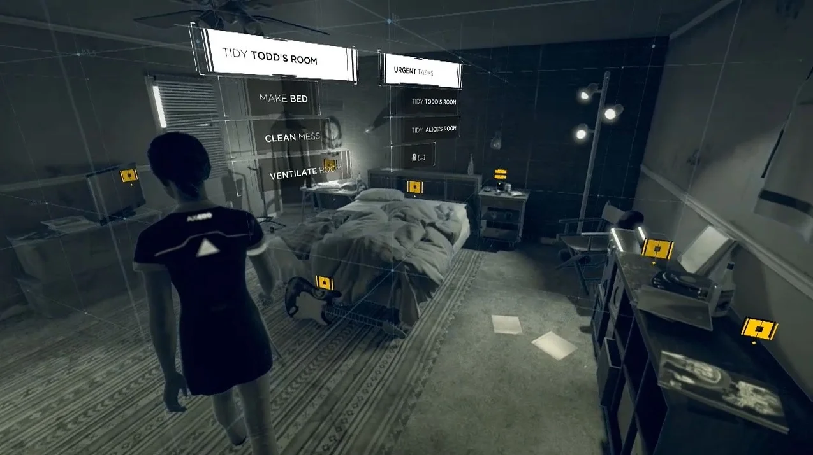
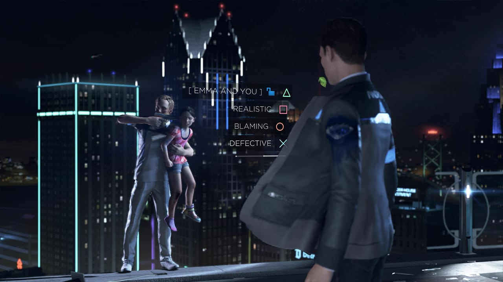
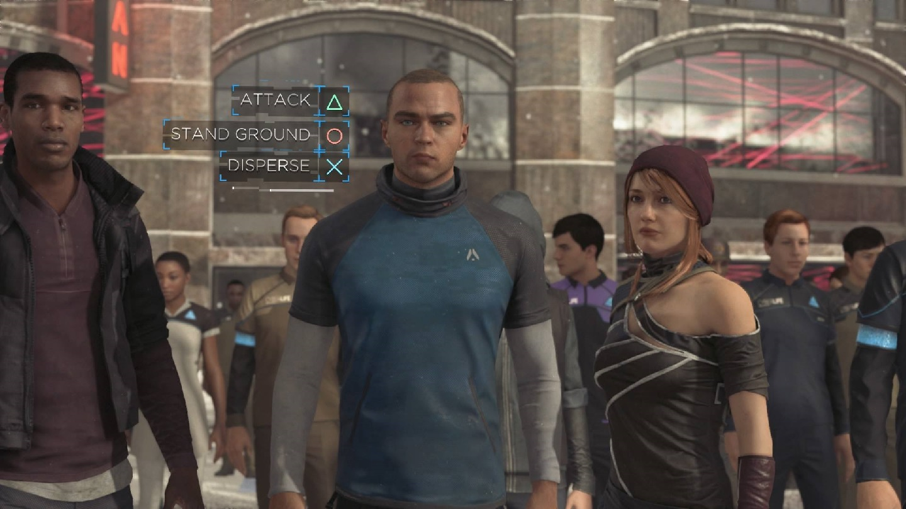

Detroit: Become Human
À l'attention du responsable du recrutement,
Détenteur d'un diplôme de Designer Numérique du cursus Game Design de l'ICAN à Paris, je souhaiterais :
Pendant mes études j'ai pu développer un profil polyvalent en accumulant de l'expérience dans divers domaines :
J'ai eu l'occasion de travailler en équipe sur divers projets tels que des jeux et mods à plusieurs reprises, par exemple :
J'ai aussi travaillé à l'élaboration et l'équilibrage de niveaux qui ont pu être playtestés régulièrement, par exemple :
Liste des preuves de mon autonomie et envie d'apprendre :

Detroit: Become Human

Detroit: Become Human
Portant un intérêt à de nombreux genres de jeux, je serais capable de m'adapter à tous types de projets aux côtés de collègues passionnés ayant accumulés de l'expérience dans le domaine, et je pense que c'est uniquement avec cet état d'esprit que je pourrais améliorer mes capacités et connaissances de QA Tester polyvalent et faire mes preuves chez Quantic Dream.
Enfin, si vous ne recherchez pas actuellement un QA Tester, je pourrais aussi contribuer si nécessaire en tant que :
Je vous remercie d'avoir lu mon message, et me tiens à votre entière disposition pour tous renseignements complémentaires.
Dans l'attente de votre réponse, je vous prie d'agréer mes sincères salutations.
Cordialement,
Scotty CHOUAN.